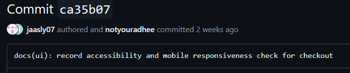
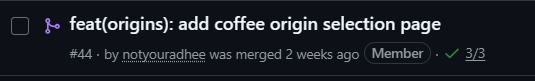
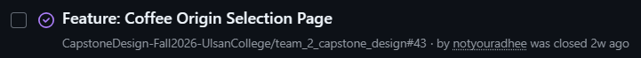
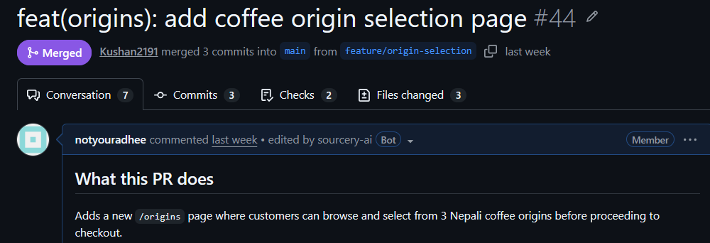
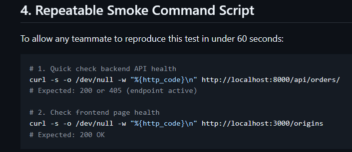

BrewMellow.
Nepali specialty coffee, roasted to order and delivered fresh
Team 2 Members
- Aanchal Chand Thakuri
(@jaasly07) - Aditya Kumar Gupta
(@notyouradhee) - Kushan Sunuwar
(@Kushan2191) - Rohit Chhantiyal
(@Rohit-coder201)
Live Links
The User & The Specialty Coffee Problem
Nepali Specialty Terroirs vs Commercial Blend Stagnation
👤 The Target User
Specialty coffee enthusiasts and home-brewers in Nepal and the diaspora.
They seek single-origin Himalayan beans with distinct elevations and processing methods (Washed, Natural, Honey) for manual brewing: V60, Aeropress, French Press.
⚠️ The Real Problem
- Zero transparency in retail: Kathmandu supermarket coffee is stale, dark-roasted commercial blend with no harvest altitude, processing method, or roast date.
- Inaccessible micro-lots: Premium beans from Gulmi, Ilam, and Nuwakot are mostly exported. Locals have no direct digital platform for fresh roast-to-order subscriptions.
Scope of this Demo & Full-Stack Architecture
Clear Boundaries Stated Upfront Before Demonstrating
🏗️ Technical Architecture
- Frontend: Next.js 16 (React 19) + Tailwind CSS, live on Vercel over HTTPS.
- Backend API: Django 5.1 REST Framework for orders and data models.
- Database: Serverless PostgreSQL cluster on Neon.
🛡️ Transparent Scope Boundary
- What is verified: End-to-end flow from browsing origins to checkout state sync, database records, customer dashboard, and roastery backoffice.
- What is simulated: Payment is flagged
is_fake_payment=True. No real cards or Khalti balances are charged; real orders are still saved and tracked.
Live Walkthrough: The Verified Vertical Slice
End-to-End Flow from Terroir Discovery to Roastery Tracking
1 · /ORIGINS (Regional Origins)
3 micro-lots: Gulmi Reserve (1,600m), Ilam Gold (1,800m), Nuwakot Heritage (1,400m) with altitude, process, and cup profiles.
2 · /CHECKOUT (State Synchronization)
Gulmi Reserve passes parameters in the URL query string; total Rs. 1,200 recalculates dynamically with no state loss.
3 · POST /API/ORDERS/ (Order Record)
Submitting writes an order row to Neon PostgreSQL and triggers the 2.0s simulated confirmation modal.
4 · /DASHBOARD · /ADMIN (Post-Purchase Hubs)
4-stage customer tracking (Confirmed → Roasting → Dispatched → Delivered); admin backoffice shows Rs. 22,150 revenue.
Individual Contribution: Aanchal Chand Thakuri
Role: Frontend & Accessibility Auditor
Concrete Contributions
- Formulated the target user persona and specialty coffee retail transparency problem.
- Audited the vertical slice at a 390px mobile viewport against WCAG 2.1 AA.
- Verified all CTA buttons give a 52px thumb target (
py-3 px-6). - Fixed sticky checkout bar collision by adding safe-area padding (
pb-28).
GitHub Evidence & Proof
Commit ca35b07: docs(ui): record accessibility and mobile responsiveness check
Receipt: docs/week-07/receipts/receipt-aanchal.md

Individual Contribution: Aditya Kumar Gupta
Role: Project Lead & Full-Stack Developer
Concrete Contributions
- Architected the full-stack vertical slice: Next.js 16, Django REST Framework, Neon PostgreSQL.
- Built
/originsto/checkoutstate sync via URL query parameters. - Deployed the production application on Vercel over HTTPS.
- Built customer dashboard, admin console, and simulated payment boundary (
is_fake_payment=True).
GitHub Evidence & Proof
Issue #43: Feature: Coffee Origin Selection Page
PR #44: feat: origin selection flow with query-param checkout
Commit 30081cc: connect origin selection to checkout state


Individual Contribution: Kushan Sunuwar
Role: QA Lead & Code Reviewer
Concrete Contributions
- Ran an independent clean-clone test on separate hardware with no author coaching.
- Reviewed PR #44, verified parameter behavior, and merged it into main.
- Tested the empty-cart edge case: opening
/checkoutdirectly shows a friendly "Your Cart is Empty" card with a "Build Your Plan" button instead of crashing.
GitHub Evidence & Proof
Merge commit 9d45f95: Merge pull request #44 from origin-selection
Edge case commit f69700e: add defensive empty cart fallback
Test note: docs/week-06/tested-by-note.md

Individual Contribution: Rohit Chhantiyal
Role: DevOps & Resilience Lead
Concrete Contributions
- Ran backend outage resilience testing: stopped the Django server and verified the frontend handles dropped connections with an explicit alert.
- Wrote repeatable curl smoke-test commands in the README for continuous health checks.
- Completed Sprint 1 Quality Quick Checks confirming zero secrets and safe demo data.
GitHub Evidence & Proof
Outage test record: docs/week-06/api-smoke-test-record.md
README section: Repeatable smoke-testing script
Quality checks: docs/week-07/sprint-1-quality-quick-checks.md

Next Steps & Sprint 2 Post-Midterm Roadmap
What Remains Incomplete Today & Immediate Post-Midterm Actions
⚠️ What Remains Incomplete Today
- Simulated payment gateway: Checkout uses the mock flag
is_fake_payment=True; real Khalti wallet sandbox deduction is pending. - Automated transactional emails: Orders are saved to PostgreSQL; automated dispatch emails via SMTP are in progress.
🚀 Sprint 2 Action Plan
- Khalti Sandbox SDK: Replace the simulated modal with real test wallet credentials (NPR).
- Transactional email: Automate confirmation and courier tracking emails on order placement.
- Roastery operations portal: Expand backoffice fulfillment status workflows.